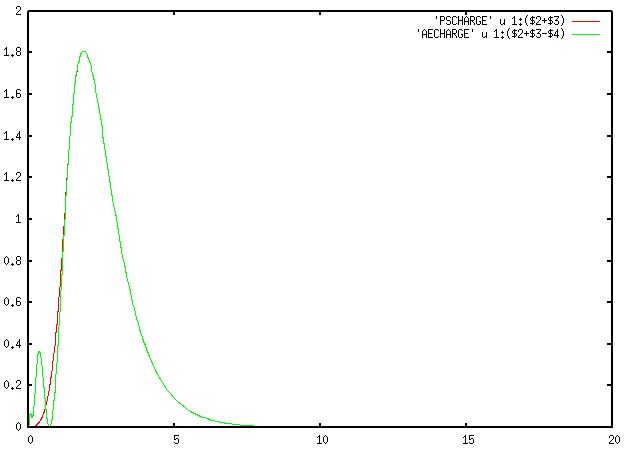

Tutorial 3 : Pseudopotential generations
Tutorial 3: Pseudopotential generations
Preliminary information
ATOM 프로그램을 통해 SIESTA에 이용되는 원자의 psf 파일을 만들 수 있다. 그 외에도 ATOM은 다음과 같은 목적에 이용된다.
- 특정 전자 배치에 대한 All-electron DFT (density functional theory) 계산 수행
- ab-initio pseudopotentials 생성
- 만들어진 pseudopotential를 통해 원자핵이 미치는 효과 계산
ATOM를 설치하기 앞서 다음과 같은 패키지를 준비해야한다.
xmlf90 : https://launchpad.net/xmlf90/+download (1.5.0. 버전)
libGridXC : https://launchpad.net/libgridxc/+download (0.7.3 버전)
리눅스 환경에 다운로드한 후 압축을 풀어주는 명령어는 다음과 같다.
$ wget https://launchpad.net/xmlf90/trunk/1.5/+download/xmlf90-1.5.4.tar.gz // 1.5.4버전
$ wget https://launchpad.net/libgridxc/trunk/0.7/+download/libgridxc-0.7.6.tgz // 0.7.6버전
$ tar xvzf xmlf90-1.5.0.tgz
$ tar xvzf libgridxc-0.7.3.tgz
압축을 풀어준 위치에서 다음과 같은 과정을 통해 컴파일을 진행한다.
xmlf90 :
$ cd xmlf90-1.5.0
$ mkdir Gfortran
$ cd Sys
$ cp gfortran.make ../Gfortran/fortran.mk
라이브러리를 생성하기 전에 fortran.mk을 다음과 같이 수정해준다.
LDFLAGS=-mkl=cluster
AR=/usr/bin/ar
이후 make명령어로 라이브러리를 빌드해준다.
$ cd ../Gfortran
$ sh ../config.sh
$ make
xmlf90.mk 생성확인
libgridxc :
(설치한 위치로 돌아와서)
$ cd libgridxc-0.7.3
$ mkdir Gfortran
$ cd Gfortran
$ cp ../extra/fortran.mk .
$ sh ../src/config.sh
$ make clean
$ make
마찬가지로 make를 하기 전 fortran.mk을 다음과 같이 수정해준다.
LDFLAGS=-mkl=cluster
AR=/usr/bin/ar
gridxc.mk 생성확인
ATOM를 위한 라이브러리가 준비되었으니 이제 ATOM을 설치한다.
ATOM : https://departments.icmab.es/leem/SIESTA_MATERIAL/Pseudos/Code/downloads.html (4.2.7 버전)
리눅스 환경에 설치하고 다음과 같은 커맨드로 압축을 풀어준다.
ATOM :
$ tar xvzf atom-4.2.7-100.gz
ATOM도 마찬가지로 컴파일을 해야 한다. 압축을 풀어준 위치에서 컴파일을 진행한다.
ATOM :
$ cd atom-4.2.7-100
$ cp arch.make.sample arch.make
$ vi arch.make
(파일이 열리면 아래 부분에 ROOT를 수정한다)
XMLF90_ROOT= <설치한 xmlf90 위치>/xmlf90-1.5.0/Gfortran
GRIDXC_ROOT= <설치한 libgridxc 위치>/libgridxc-0.8.5/Gfortran
include $(XMLF90_ROOT)/xmlf90.mk
include $(GRIDXC_ROOT)/gridxc.mk
$ make
ATOM 프로그램이 준비되었다.
All-electron calculations
바닥 상태의 Si 원자를 예시로 ATOM의 입력파일을 살펴보겠다. 보통 ATOM 입력 파일의 확장자는 .inp로 표시한다. 설치된 ATOM 위치에서 /Tutorial/All_electron에 다음과 같은 파일이 있다.
Si.ae.inp
ae Si Ground state all-electron # 계산 종류 (ae : All-electron) / 시스템 이름
Si ca # 원소기호 / Exchange correlation 종류 (ca : non-realistic)
0.0
3 2 # 핵(core) 오비탈 (1s, 2s, 2p) / 원자가(valence) 오비탈 (3s, 3p)
3 0 2.00 # 주 양자수(n) / 방위 양자수(l) / 전자 수
3 1 2.00
12345678901234567890123456789012345678901234567890 Ruler
../Utils/ 위치에 ATOM 프로그램 계산을 위한 쉘 스크립트들이 있다. 다음과 같은 명령어로 All-electron 계산을 수행한다.
$ sh ../Utils/ae.sh si.ae.inp
=> si.ae 폴더 생성
생성된 si.ae 위치에 가면 결과 파일들이 생성되어 있다. 결과 파일들에 대한 자세한 설명은 Manual 참조하길 바란다.
.gplot, .gps 형식 파일은 gnuplot과 관련한 결과 파일들이다. gnuplot 패키지가 설치되어 있다면 다음과 같은 명령어로 그래프를 생성할 수 있다. (-persist 옵션을 추가하지 않으면 그래프가 유지되지 않는 현상이 있다)
$ gnuplot -persist ae.gplot //gplot 파일들을 불러오면 다양한 그래프들을 볼 수 있다.
Pseudopotential generations
다시 /Tutorial 위치로 돌아가서 /PS_Generation에 들어가본다. Pseudopotential를 만들기 위한 예시 파일들이 있다. 우리는 Si을 예시로 살펴본다. Si.tm2.inp 파일을 열어본다.
Si.tm2.inp
#
# Pseudopotential generation for Silicon
# pg: simple generation
#
pg Silicon
tm2 3.0 # PS flavor, logder R
n=Si c=car # Symbol, XC flavor,{ |r|s}
0.0 0.0 0.0 0.0 0.0 0.0
3 4 # norbs_core, norbs_valence
3 0 2.00 0.00 # 3s2
3 1 2.00 0.00 # 3p2
3 2 0.00 0.00 # 3d0
4 3 0.00 0.00 # 4f0
1.90 1.90 1.90 1.90 0.00 0.00
#
# Last line (above):
# rc(s) rc(p) rc(d) rc(f) rcore_flag rcore
#
#2345678901234567890123456789012345678901234567890123456789
All_electron 입력 파일과 다른 점은 우선 상단 왼쪽에 위치한 계산 모드가 ae가 아닌 pg로 되어있다는 것이다. 이를 꼭 pg로 수정해야 pseudopotential을 위한 계산을 할 수 있다. 마지막 줄은 6개의 슬롯으로 구성 되어있다. 처음 4개의 값은 각각 s, p, d, f 오비탈의 cut off radius에 해당하고, 마지막 두 값은 추후에 설명할 core corrections와 관련있다. 그 외에 입력 옵션들은 꼭 매뉴얼을 통해 확인하기를 바란다. All-electron과 마찬가지로 쉘 스크립트로 계산을 수행할 수 있는데, Pseudopotential을 만들기 위한 쉘 스크립트는 ae.sh가 아닌 pg.sh이다.
$ sh ../../Utils/pg.sh Si.tm2.inp
SIESTA 프로그램이 입력 파일로 이용할 수 있는 Si.psf 파일이 생성되었다. 여기서 주의할 점은 SIESTA에서는 basis가 되는 오비탈이 (l =3)까지 있어야한다. 따라서 실제 원자의 원자가 오비탈이 l = 3 까지 차 있지 않더라도 전자가 차 있지 않은 가상의 오비탈을 넣고 계산을 돌려야 한다. (위의 경우 3d, 4f)
Core correction
ATOM 프로그램은 non-linear exchange-correlation correction 1 계산을 수행할 수 있다.
Pseudo core의 전하밀도가 특정한 pseudo radius 밖에서 전하밀도도가 일치하고 경계부에서 매끈한 형태를 가지게 맞추어 주는 일련의 과정이 core correction이다. Pseudopotential를 만드는 계산에서 이 계산을 포함시키기 위해서 앞서 실행한 입력 파일에서 pg 옵션을 pe로 바꾸어 주면 된다. 또한 마지막 줄에서 6번째 해당하는 값인 pseudo radius을 넣어준다. 만약 이 값이 음수이거나 0이면 5번째 값인 valence charge density를 통해 이 반경을 직접 계산하게 되는데, 이 값 역시 음수이면 전체 핵 전하를 기준으로, 0이면 1 값을 기준으로 계산하도록 되어있다. 따라서 pseudo radius을 실험적으로 얻은 외부 참조 값을 이용하여 넣어주는 것을 강력히 추천한다.
Pseudopotential test
Norm-Conserving Pseudopotentials, D. R. Hamann, M. Schlüter, and C. Chiang PRL (1979) 2 논문에서 제시한 pseudopotential의 조건은 다음과 같다.
- Pseudo와 real의 원자가 고유함수 (valence eigenvalue)가 일치한다
- Pseudo와 real의 파동함수 (wavefunction)가 rc (core radius) 이후로 일치한다
- Pseudo와 real의 전하 밀도 (charge density)를 0에서 r까지 적분한 값이, r이 rc보다 클 때 일치한다 (norm conserving)
- Pseudo와 real의 파동함수에 대한 로그도함수 (logarithmic derivatives)가 rc 이후로 일치한다
ATOM을 통해 위 조건들을 확인하는 방법을 소개한다.
1. 원자가 고유함수 (valence eigenvalue)
Pseudo와 real의 원자가 고유값이 일치하는지 확인하기 위해 all-electron과 pseudopotenial generations에 대한 계산 결과를 비교하면 된다. pg 계산에서는 OUT 파일에 이 두가지 정보를 모두 담고 있다. 따라서 두 고유값을 비교하기 위해서 pg 계산 결과가 나온 OUT 파일이 포함된 폴더에서 다음과 같은 명령어를 수행한다.
(Pseudopotential generation 결과 폴더에서)
$ grep ‘&v’ OUT

명령어를 통해 보여지는 결과, all-electron과 pseudopotential generations에 대한 오비탈 정보가 두 영역으로 나타난다. 이에 해당하는 영역은 vi 명령어를 통해 직접 OUT 파일을 직접 열어본 위 사진을 통해 확인할 수 있다. 오른쪽 &v 라벨이 valenace 오비탈을 지칭하고, 4번째 행이 그 고유값이다. 이를 통해 pseudo와 real의 원자가 고유값이 일치하는 것을 확인할 수 있다.
2. 파동함수 (Wavefunctions)
pg 계산에서 AEWFNR0 R1 R2 R3 파일은 s, p, d, f 오비탈에 대한 all-electron 원자가 파동함수 결과이다. PSFNR0 R1 R2 R3 파일은 s, p, d, f 오비탈에 대한 pseudo 원자가 파동함수 결과이다. gnuplot을 이용하여 두 결과가 rc 이후에서 일치하는 것을 확인할 수 있다. 아래는 바닥 상태의 Si 원자에 대한 예시이다.
$ gnuplot
gnuplot > plot 'AEWFNR1' w l, 'PSWFNR1' w l
(R1 : 3p 오비탈)

3. 전하 밀도 (Charge density)
pg 계산에서 AECHARGE는 all-electron의 전자밀도이다. 첫번째 열은 반경 (r), 두번째, 세번째 열은 각각 스핀에 해당하는 전체 전자밀도, 마지막 열은 핵 (core) 전자밀도이다. PSCHARGE는 ‘pseudopotential’에 대한 원자가 (valence) 전자밀도이다. 마찬가지로 첫번째 열은 반경 (r), 두번째, 세번째 열은 각각 스핀에 해당하는 전자밀도이다. 따라서 두 계산의 원자가 전자밀도를 비교하기 위해서는 다음과 같은 과정을 따른다.
$ gnuplot
gnuplot >plot 'PSCHARGE' u 1:($2+$3) w l ($2+$3 : 전체 원자가 전자밀도)
gnuplot > set xrange [0:20]
gnuplot >replot 'AECHARGE' u 1:($2+$3-$4) w l ($4 : 핵 전자밀도)

4: 로그도함수 (Logarithmic derivatives of wavefunctions)
위 pg 모드 계산 코드를 보면 두번째 줄에 tm2와 3.0 옵션을 볼 수 있다. 이에 해당하는 옵션이 로그도함수 계산을 위한 종류와 반경이다. 메뉴얼을 참고하여 다른 옵션을 줄 수 있다.
pg 계산에서 AELOGD0 D1 D2 D3 파일이 s, p, d, f 오비탈에 대한 all-electron 파동함수의 로그도함수이다. 또한 PSLOGD0 D1 D2 D3 파일이 s, p, d, f 오비탈에 대한 pseuodopotential 파동함수의 로그도함수이다. 위 과정들과 마찬가지로 gnuplot을 통해 비교한다.
$ gnuplot
gnuplot >plot ' AELOGD1' w l
gnuplot >replot ' PSLOGD1' w l

5: Transferability test
여기서 (3), (4) 조건은 transferability와 관련한 조건이다. Transferability는 외부 화학반응에 있어 중요한 부분인 만큼 pseudopotential generations에 핵심 조건 중 하나가 된다. 이를 ATOM 프로그램을 통해 직접 확인하는 방법은 다음 절차를 따른다. Tutorial/Si 위치에 있는 Si.test.inp 파일을 확인해본다.
Si.test.inp :
#
# All-electron calculations for a series of Si configurations
#
ae Si Test -- GS 3s2 3p2
Si ca
0.0
3 2
3 0 2.00
3 1 2.00
ae Si Test -- 3s2 3p1 3d1
Si ca
0.0
3 3
3 0 2.00
3 1 1.00
3 2 1.00
ae Si Test -- 3s1 3p3
Si ca
0.0
3 2
3 0 1.00
3 1 3.00
ae Si Test -- 3s1 3p2 3d1
Si ca
0.0
3 3
3 0 1.00
3 1 2.00
3 2 1.00
ae Si Test -- 3s0 3p3 3d1
Si ca
0.0
3 3
3 0 0.00
3 1 3.00
3 2 1.00
#
# Pseudopotential test calculations
#
pt Si Test -- GS 3s2 3p2
Si ca
0.0
3 2
3 0 2.00
3 1 2.00
pt Si Test -- 3s2 3p1 3d1
Si ca
0.0
3 3
3 0 2.00
3 1 1.00
3 2 1.00
pt Si Test -- 3s1 3p3
Si ca
0.0
3 2
3 0 1.00
3 1 3.00
pt Si Test -- 3s1 3p2 3d1
Si ca
0.0
3 3
3 0 1.00
3 1 2.00
3 2 1.00
pt Si Test -- 3s0 3p3 3d1
Si ca
0.0
3 3
3 0 0.00
3 1 3.00
3 2 1.00
12345678901234567890123456789012345678901234567890 Ruler
위와 같이 Si.test.inp 파일에는 Si 원자에 대한 다양한 전자배치 정보가 들어있다. 코드를 확인하면 동일한 전자배치로 구성된 ae와 pt 계산에 대한 두 영역으로 나눠져 있다. 여기서 pt는 pseudopotential test를 위한 계산 모드이다. pt 계산을 수행하기 위해서는 pt.sh 쉘 스크립트를 이용해야 한다. 여기서 중요한 점은 pt 계산은 Si 원자의 바닥 상태에 대한 pg 계산 결과로 나온 vps 파일을 입력 파일로 받는다는 점이다. 이전 과정에서 이미 pg 계산을 수행했다면, Si.tm2.vps 파일이 같은 위치에 남아있을 것이다 (없다면 pg 계산을 먼저 수행해서 vps 파일을 얻는다).
$ sh ../../Utils/pt.sh Si.test.inp Si.tm2.vps
Total energy 비교 :
$ grep ‘&d’ OUT

Eigenstate 비교 :
$ grep ‘&v’ OUT

위 과정을 통해 Si 원자의 all-electron과 pseudopotential에 대한 여러 전자배치의 total energy와 eigenvalue를 비교하여, transferability를 시험할 수 있다.
Practice : Fe
이제 실제 SIESTA 프로그램을 위한 pseudopotential 입력파일을 만들어보자. 위에서 언급했듯 SIESTA는 basis가 되는 오비탈이 (l =3)까지 있어야한다. 이런 점을 만족시키는 pseudopotential generations의 입력파일은 다음 사이트에서 얻을 수 있다. pseudo
위 사이트에 가면 pseudopotential을 만드는 방법으로 LDA (localized density approximation)과 ‘GGA’ (generalized gradient approximation)을 선택할 수 있다. LDA 방법은 Au 원자와 같은 전위금속의 구조를 정확히 예측하지 못한다3. 따라서 GGA 방법을 선택하여 Fe의 ATOM 입력파일 (input file for ATOM program)을 설치한다.
Fe.inp :
pe -- file generated from Fe ps file
tm2
Fe pb
0.000 0.000 0.000 0.000 0.000 0.000
5 4
4 0 2.000 0.000 #4s
4 1 0.000 0.000 #4p
3 2 6.000 0.000 #3d
4 3 0.000 0.000 #4f
2.41000 2.53000 2.29000 2.29000 0.01000 -1.00000 small core charge
#23456789012345678901234567890123456789012345678901234567890 Ruler
입력 파일을 살펴보면 첫번째 줄에 pe 계산모드가 되어있는 것을 확인할 수 있다. 앞서 설명했듯이 이는 pseudopotential generations를 하는데 core correction을 추가한 옵션이다. Core correction를 통해 더욱 안정적으로 pseudopotential을 만들 수 있다.
두번째 줄의 tm2은 이전에 설명한 transferability를 위해 로그도함수를 시험하기 위한 옵션이다. 또한 세번째 줄에 pb 옵션을 볼 수 있는데, 이는 GGA 방법의 종류로 PBE ((Perdew, Burke, and Ernzerhof) 방법을 의미한다. 다른 방법들은 메뉴얼을 통해서 확인하도록 한다.
Au와 같이 원자번호가 큰 금속은 상대론적 효과가 나타난다 (원자핵 주변으로 핵 전자들이 더욱 구속되면서 가림 효과 (shielding effect)가 커지고, d나 f 오비탈의 전자들의 구속력이 약해진다)4. 따라서 계산에서도 상대론적 효과를 고려하는 것이 좋다. pb 옵션 뒤에 s를 붙여주면 spin-polarized, non-relativistic 계산을 수행할 수 있고, r를 붙여주면 spin-polarized, relativistic 계산을 수행할 수 있다. pb를 pbr로 바꾸어 주어 상대론적 효과를 고려한 pseudopotential을 만들어보자.
$ <ATOM 프로그램 위치>/Tutorial/Utils/pg.sh Fe.inp
SIESTA 계산을 위한 Fe.psf 파일이 생성되었다.
참고문헌
1: S. G. Louie, S. Froyen, and M. L. Cohen, Phys. Rev. B 26, 1738 (1982)
2: Norm-Conserving Pseudopotentials, D. R. Hamann, M. Schlüter, and C. Chiang PRL (1970)
3: J. Phys.: Condens. Matter13 (2001) 9463–9470
4: Relativistic effects and the chemistry of gold (1998)